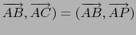
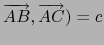
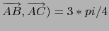

suivant: Le triangle rectangle dans
monter: Les triangles dans l'espace
précédent: Le triangle quelconque dans
Table des matières
Index
Le triangle isocèle dans l'espace : isoceles_triangle triangle_isocele
Voir aussi : 9.11.3 pour la géométrie plane.
triangle_isocele, en géométrie 3D, a trois ou quatre
arguments.
Description des arguments :
- si il a trois arguments, ce sont : 3 points (les 2 premiers sommets A et
B du triangle) et le troisième argument est soit un point P, soit une
liste formée par un point P et un réel c qui désigne la mesure en
radians (ou en degrés) de l'angle
( , l'angle
(
, l'angle
( étant positif.
étant positif.
Le point P définit le plan du triangle
ainsi que l'orientation de ce plan pour que l'angle
( soit positif.
triangle_isocele(A,B,P) renvoie et trace dans le plan ABP orienté
par P (l'angle
( est positif)
le triangle ABC isocèle de sommet A (AB = AC) et tel que l'angle
(, sans définir le point C).
On tape :
A:=point(0,0,0)
B:=point(3,3,3)
P:=point(0,0,3)
Puis on tape :
triangle_isocele(A,B,P)
Dans le plan ABP, le triangle isocéle de sommets AB, d'angle
(
triangle_isocele(A,B,[P,c]) renvoie et trace dans le plan ABP
orienté par P (l'angle
( est positif) le triangle ABC isocèle de sommet A (AB = AC) et tel que l'angle
( radians (ou degrés), sans
définir le point C).
On tape :
A:=point(0,0,0)
B:=point(3,3,3)
P:=point(0,0,3)
Puis on tape :
triangle_isocele(A,B,[P,3*pi/4])
On obtient si on a coché radian dans la configuration du cas
(bouton donnant la ligne d'état) :
Dans le plan ABP, le triangle isocéle de sommets AB,
d'angle
(
- si il a quatre arguments, le dernier argument est le nom d'une
variable qui servira à définir le troisième sommet.
On tape :
triangle_isocele(A,B,[P,3*pi/4],C)
On obtient si on a coché radian dans la configuration du cas
(bouton donnant la ligne d'état) :
Dans le plan ABP, le triangle isocéle de sommets AB, d'angle
(
On tape :
simplify(coordonnees(C))
On obtient :
[(-3*sqrt(2)-3)/2,(-3*sqrt(2)-3)/2,(-3*sqrt(2)+6)/2]
suivant: Le triangle rectangle dans
monter: Les triangles dans l'espace
précédent: Le triangle quelconque dans
Table des matières
Index
Documentation de giac écrite par Renée De Graeve